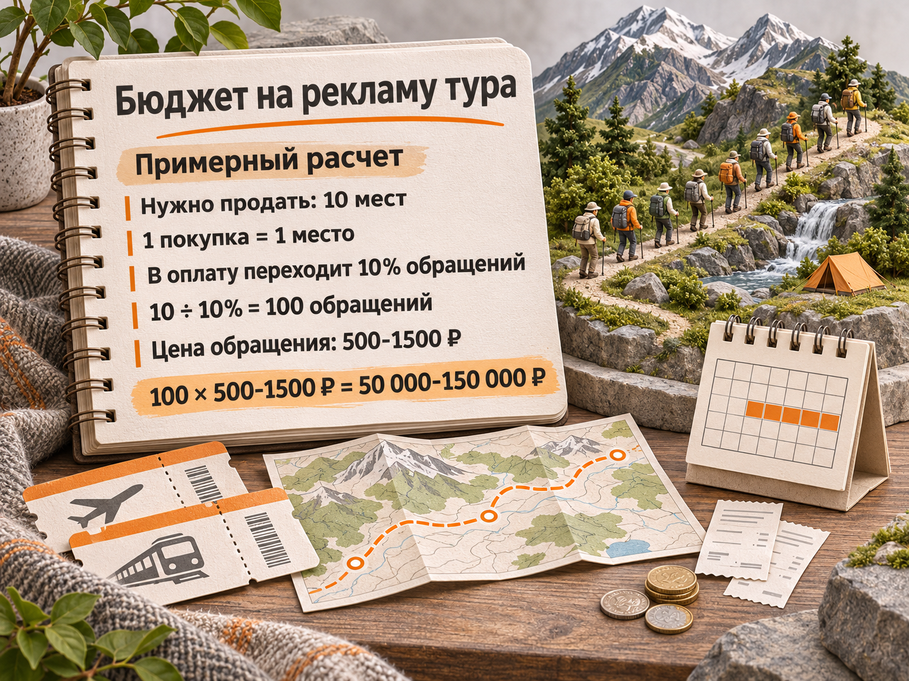

Блог о платном трафике
Продвижение авторских туров в 2027 году: каналы, бюджет и прогноз заявок
Чтобы набрать группу на авторский тур, организатору нужны понятная программа, страница с условиями поездки, несколько источников обращений и учет оплаченных бронирований. Яндекс Директ помогает работать с поисковым спросом и рекламной сетью, ВКонтакте - показывать маршруты выбранной аудитории, а Telegram и MAX - собирать аудиторию вокруг проекта и поддерживать контакт до покупки.
Планировать бюджет стоит от количества мест и допустимой стоимости привлечения туриста. В разобранных кейсах стоимость обращения составляла от 153 до 2100 рублей, но это результаты отдельных кампаний, а не средняя цена по рынку. Различаются направления, рекламные площадки и то, что исполнители называют заявкой.
Что подготовить перед продвижением авторского тура
Выберите конкретный тур и ближайшие даты отправления. Когда в рекламе одновременно представлены десятки направлений, сложнее понять, какая программа заинтересовала человека и сколько стоит набор группы по каждому маршруту.
На странице тура или в оформленном сообществе разместите:
- Направление, маршрут по дням, даты и продолжительность поездки.
- Полную стоимость, размер предоплаты, что включено в цену и за что турист платит отдельно.
- Размер группы, оставшиеся места и минимальное число участников, если от него зависит проведение тура.
- Информацию об организаторе, сопровождающих, опыте и условиях договора.
- Фотографии реальных поездок, отзывы участников и ответы на вопросы о сложности маршрута.
- Порядок бронирования, условия отмены и способ связаться с менеджером.
Покупатель выбирает не только локацию. Он оценивает, подходит ли ему группа, выдержит ли он нагрузку и кому доверяет деньги. Поэтому фотография красивого озера привлекает внимание, но для бронирования человеку нужны конкретные условия.
Для каждого направления подготовьте отдельную страницу или раздел. В объявлении о туре на Алтай ведите на программу Алтая, а не на общую главную страницу с десятками маршрутов. Укажите дату и цену в объявлении, если они известны: это помогает человеку заранее понять, подходит ли предложение.
Как рассчитать бюджет и допустимую стоимость клиента
Для начала определите, сколько мест еще нужно продать. Затем оцените долю обращений, которые заканчиваются оплатой, и стоимость обращения. Если статистики нет, эти значения будут допущениями до получения собственных данных.
Примерный расчет набора группы
Предположим, что необходимо продать 10 мест, одно оплаченное бронирование приносит одно место, а 10% обращений переходят в оплату. Цена обращения в модели - 500-1500 рублей.
- Необходимое количество обращений: 10 / 0,10 = 100.
- Бюджет при цене обращения 500 рублей: 100 × 500 = 50 000 рублей.
- Бюджет при цене обращения 1500 рублей: 100 × 1500 = 150 000 рублей.

Итого примерный рекламный бюджет - 50 000-150 000 рублей. Он не включает работу специалиста, подготовку контента, сайта и другие расходы. Цена обращения и конверсия здесь заданы для расчета, а не установлены как фактическая норма. Если одно бронирование часто включает несколько туристов, отдельно учитывайте число мест на бронь.
Как понять, окупится ли реклама
Сначала вычтите из цены тура переменные расходы на одного туриста: проживание, транспорт, питание, работу сопровождающих и другие затраты, которые возникают при продаже места. Затем определите, какую часть оставшейся суммы можно потратить на привлечение с учетом постоянных расходов и желаемой прибыли.
Например, с одного оплаченного места после переменных расходов остается 20 000 рублей, а на рекламу организатор готов направить максимум 5000 рублей. Если один клиент покупает одно место и оплачивает поездку каждый десятый обратившийся, допустимая стоимость обращения составит 500 рублей: 5000 × 10%.
Это ограничение конкретной модели. Если средняя бронь включает двух туристов, расходы распределяются иначе. Предоплату, возвраты, скидки и отмены также учитывайте при оценке фактического результата.
Стоимость оплаченного бронирования считайте отдельно для каждого канала: разделите расходы канала за выбранный период на число оплаченных бронирований, которые ему обоснованно удалось приписать. Сравните результат с допустимым расходом на бронь. Если расходы превысили предел, проверьте цену обращения, качество заявок, конверсию менеджера и экономику тура.
Подробный порядок расчета показателей описан в статье как оценить эффективность Яндекс Директа.
Какие каналы использовать для продвижения туров
| Канал | Когда подходит | Что оценивать |
|---|---|---|
| Поиск Яндекса | Люди уже ищут конкретный маршрут или формат | Запросы, обращения и оплаченные бронирования |
| Рекламная сеть Яндекса | Нужно проверить интерес к направлению у более широкой аудитории | Качество обращений и стоимость брони по сегментам |
| ВКонтакте | Есть фотографии, видео, сообщество и возможность оперативно отвечать | Стоимость обращения, долю целевых диалогов и оплаты |
| Telegram | Нужно привлекать подписчиков и поддерживать контакт до выбора даты | Стоимость подписчика, обращения и оплаченные брони |
| MAX | Аудитории удобен этот мессенджер, есть ресурсы вести канал | Подписки, обращения и оплаченные брони с доступной атрибуцией |
| Партнеры и рекомендации | Есть подходящие сообщества, организаторы или бывшие клиенты | Стоимость привлечения, число оплат и условия вознаграждения |
Выбирайте набор каналов по ресурсам и аудитории проекта. Новому организатору с ограниченным бюджетом разумно проверить поисковый спрос по конкретному туру и один канал для работы с аудиторией, а затем распределять деньги по результатам. Telegram и MAX можно использовать как место для продолжения общения с посетителями сайта, даже если первый контакт произошел в другом канале.
Как продвигать авторские туры через Яндекс Директ
Поиск: реклама по конкретным запросам
Начните с запросов, по которым человек ищет готовую поездку: направление, формат и предполагаемые даты. Например, «авторский тур на Алтай», «групповой тур в Дагестан» или «фототур на Байкал». Разделите программы по направлениям и посадочным страницам, чтобы видеть результаты каждого предложения.
Общие фразы вроде «Алтай фото» могут означать интерес к картинкам, а не к покупке тура. Изучайте поисковые запросы в отчетах и исключайте нерелевантные формулировки, если они расходуют деньги без полезных обращений. Не исключайте целые темы только из-за одного клика: для вывода нужна достаточная статистика.
В объявлениях показывайте то, что помогает выбрать: длительность поездки, формат группы, цену и конкретное направление. Проверьте, чтобы те же условия были на посадочной странице.
РСЯ: проверка интереса к маршрутам
В Рекламной сети Яндекса человек может еще не искать тур прямо сейчас. Поэтому рекламный материал должен быстро объяснять, куда предлагается поездка, кому она подойдет и что входит в программу. Тестируйте разные направления и фотографии реальных маршрутов, а не только общий призыв отправиться в путешествие.
Анализируйте рекламные сегменты по обращениям и оплатам. Одна недорогая заявка не доказывает прибыльность площадки или аудитории. Учитывайте задержку между обращением и покупкой и проверяйте качество трафика до масштабирования.
Кейс специалиста по рекламе авторских туров, сданный в сентябре 2026 года, показывает разницу между направлениями. Для Северной Осетии стоимость конверсии составила около 2100 рублей, а конверсия клика в целевое действие - около 1,38%. Для Дагестана в том же кейсе указана конверсия около 2,56%. Автор не раскрыл в тексте общий бюджет, количество заявок и оплаченных продаж, поэтому оценить окупаемость нельзя.
Как настроить измерение
Перед стартом установите Яндекс Метрику и проверьте отправку формы, переход к контакту и другие действия, необходимые проекту. Переход в мессенджер показывает интерес, но сам по себе не подтверждает обращение или продажу.
Размечайте ссылки, сохраняйте рекламный источник в системе учета и передавайте менеджеру информацию о направлении и дате тура. Если оплата происходит после переписки или звонка, фиксируйте ее в CRM и связывайте с источником по доступным данным. При соответствующей настройке данные об офлайн-конверсиях можно передавать в Метрику.
Подробнее о настройке кампаний - в материале как настроить Яндекс Директ.
Как продвигать авторские туры во ВКонтакте
Оформите сообщество так, чтобы человек сразу увидел направления, ближайшие даты, стоимость и способ связи. Закрепите программу ближайшего тура, добавьте фотографии поездок, отзывы и ответы на частые вопросы. Если аудитория покупает тур через сообщения, проверьте скорость ответа и работу уведомлений.
Для рекламы разделяйте кампании по маршрутам и датам. Можно тестировать объявления с фотографиями, короткими видео и конкретными программами. Сравнивайте не только стоимость формы или сообщения, но и то, сколько людей действительно готовы обсуждать поездку и оплачивают ее.
В кейсе организатора авторских туров в Узбекистан, опубликованном в марте 2026 года, автор сообщил о 203 обращениях за два месяца при расходе 31 000 рублей. Пересчет дает около 153 рублей за обращение. Число продаж и качество заявок не раскрыты.
В другом примере агентство MANIFEST сообщило о 2435 заявках на групповые туры My Tour по средней цене 386 рублей из рекламы ВКонтакте. Обзор опубликован в октябре 2026 года, но точный период кампании и число оплаченных бронирований не указаны. Поэтому показатель помогает увидеть возможный порядок стоимости обращения, но не доказывает окупаемость.
Еще один кейс, сданный в октябре 2026 года, описывает продвижение авторского тура «Талисман Алтая» через ВКонтакте. По словам исполнителя, расходы 8523 рубля принесли три оплаченных бронирования на семь туристов. Стоимость бронирования по пересчету - 2841 рубль, рекламные расходы на одного туриста - около 1218 рублей. Дата самой кампании в описании не уточнена, а данных о марже нет. Это небольшой пример, по которому нельзя прогнозировать результат другого тура.
Как использовать Telegram для набора групп
Telegram подходит для регулярного контакта с людьми, которые пока выбирают направление или ждут подходящие даты. В канале публикуйте программы и стоимость туров, рассказывайте о маршрутах, размещении, сложности поездки и показывайте материалы участников с их согласия. В закрепленном сообщении укажите, как получить программу и связаться с организатором.
Подписчиков можно привлекать с сайта, из других соцсетей, рекламой и размещениями в тематических каналах. Для каждого размещения используйте отдельную ссылку или иной способ учета, чтобы видеть, где появились подписки и обращения. Отдельно записывайте оплаты: стоимость подписчика не равна стоимости клиента.
Агентство MANIFEST описало работу с Telegram-каналом My Tour с мая 2025 по январь 2026 года. За пять месяцев, с конца сентября по январь, канал принес 262 заявки; аудитория за время работы выросла с 857 до 2576 подписчиков. К концу января цена подписчика из размещений составляла 141 рубль. По словам агентства, использовались размещения в каналах и реклама через Яндекс. Общие расходы и оплаченные продажи в этом показателе не раскрыты, поэтому стоимость заявки и окупаемость по нему не вычислить.
В Яндекс Директе доступны форматы рекламы в каналах Telegram. По справке Яндекса, рекламируемой страницей в соответствующем формате может быть сайт или канал. Перед запуском проверьте доступные настройки в рекламном кабинете: форматы и условия меняются.
Как организатору туров использовать MAX
Канал в MAX может стать дополнительной точкой контакта: разместите в нем ближайшие даты, условия тура, фотографии поездок, ответы на вопросы и контакт менеджера. Ссылку на канал добавьте на сайт и в другие доступные площадки, чтобы заинтересованный человек мог подписаться и вернуться к предложению позже.
По справке Яндекса, реклама в MAX доступна в России в каналах - партнерах Рекламной сети Яндекса. При запуске отдельно проверяйте доступность формата и посадочной страницы в кабинете. Для оценки результата фиксируйте переходы, обращения и оплаченные брони, которые можно связать с размещением.
В 2026 году агентство «Авентон» описало работу с проектом по речным круизам: канал в MAX вырос до 936 подписчиков. Это пример из смежного туристического сегмента, а не кейс авторских туров. Данных о стоимости обращения и оплаченных продажах именно из MAX в опубликованном материале нет, поэтому по нему нельзя оценить цену клиента.
Какие каналы не стоит запускать без проверки
Не распределяйте небольшой бюджет сразу между всеми площадками. При малом числе обращений будет трудно понять, что повлияло на результат. Для первого теста выберите конкретную программу и достаточный срок, чтобы менеджер успел обработать заявки и зафиксировать оплаты.
Не покупайте подписчиков или показы как самостоятельную цель, если ваша задача - заполнить ближайшую группу. Охват и подписки полезны для оценки интереса, но не показывают, сколько мест оплачено.
Не отправляйте людей в пустой канал или на страницу без дат и стоимости. Не отключайте канал только из-за дорогой заявки: сначала сравните стоимость оплаченной брони и прибыль на одного туриста. И наоборот, дешевая заявка с неподходящим бюджетом путешественника может не принести продажи.
Как обрабатывать обращения и не терять бронирования
Зафиксируйте для каждой заявки источник, направление, желаемые даты, число путешественников, статус и результат. Учитывайте отдельно обращение, оплаченное бронирование и число проданных мест: одна бронь может включать несколько человек.
Договоритесь, кто отвечает на сообщения и когда менеджер возвращается к человеку. Уточняйте состав группы, даты, ограничения по маршруту и бюджет, затем отправляйте программу и условия бронирования. После этого согласуйте следующий контакт, а не оставляйте подборку без обратной связи.
При сравнении каналов учитывайте, что человек мог сначала увидеть публикацию, позже перейти на сайт, а оплатить после разговора в мессенджере. Фиксируйте известные касания и используйте одинаковое правило отнесения продаж к источникам. Часть оплат останется без надежной атрибуции - не распределяйте их между рекламными каналами произвольно.
Если обращений много, а броней мало, проверьте, совпадают ли цена и условия в рекламе с предложением менеджера, подходят ли даты и оперативно ли обрабатываются запросы. Если брони есть, но реклама не окупается, пересчитайте допустимую стоимость привлечения с учетом фактической маржи и возвратов.
Прогноз продвижения авторских туров на 2027 год
Для планирования на 2027 год ориентируйтесь на собственную экономику и свежие результаты тестов. Поиск, ВКонтакте, Telegram и MAX решают разные задачи: часть аудитории готова искать конкретную программу, часть сначала знакомится с организатором и выбирает дату позже.
Разобранные кейсы показывают разброс стоимости обращений от 153 до 2100 рублей, но они не образуют статистически представительную выборку. При этом в Telegram-кейсе известна цена подписчика, а в кейсе «Талисман Алтая» - цена бронирования. Сравнивать эти значения напрямую нельзя.
Если собственных данных пока нет, можно использовать расчет из начала статьи как отправную модель: 10 мест, одно место на оплачиваемую бронь, 10% обращений в оплату и 500-1500 рублей за обращение. При таких допущениях понадобится около 100 обращений и 50 000-150 000 рублей на рекламу. Реальная конверсия может оказаться выше или ниже, а результат зависит от спроса, предложения, сезона и обработки заявок.
После теста замените допущения на свои данные. Если реклама приводит обращения по приемлемой цене, но клиенты не бронируют тур, увеличение бюджета само по себе не решит проблему. Сначала проверьте программу, условия, качество аудитории и работу с обращениями.
Пошаговый план запуска
- Определите дату поездки, вместимость, число свободных мест и допустимый расход на привлечение.
- Подготовьте страницу тура: маршрут, цену, условия, отзывы и контакты.
- Настройте учет обращений и оплат, проверьте работу формы и мессенджеров.
- Запустите поиск по конкретным направлениям и протестируйте выбранный канал работы с аудиторией.
- Разместите ссылки на Telegram и MAX там, где их увидит заинтересованный посетитель.
- Записывайте расходы и оплаченные брони по источникам, учитывая задержку принятия решения.
- Пересчитайте стоимость бронирования и направляйте бюджет в кампании, которые укладываются в экономику тура.